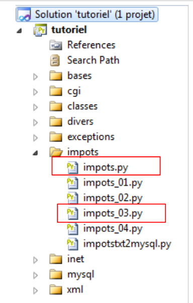
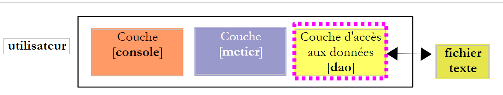

8. Exercício prático — [IMPOTS] com arquitetura em camadas
 |
Retomamos aqui o exercício descrito no parágrafo 4.1. Partimos da versão com ficheiros de texto descrita no parágrafo 4.3. Para tratar este exemplo com objetos, vamos utilizar uma arquitetura de três camadas:
 |
- a camada [dao] (Data Access Object) encarrega-se do acesso aos dados. A seguir, estes dados serão encontrados primeiro num ficheiro de texto e, depois, numa base de dados MySQL;
- a camada [metier] trata dos aspetos de negócio, neste caso o cálculo do imposto. Não lida com os dados. Estes podem ter duas origens:
- a camada [dao] para os dados persistentes;
- a camada [console] para os dados fornecidos pelo utilizador.
- a camada [console] trata das interações com o utilizador.
A seguir, as camadas [dao] e [metier] serão implementadas, cada uma, por meio de uma classe. A camada [console] será, por sua vez, implementada pelo programa principal.
Suponha-se que todas as implementações da camada [dao] ofereçam o método getData(), que devolve uma tupla de três elementos (limites, coeffR, coeffN), que são as três matrizes de dados necessárias para o cálculo do imposto. Noutras linguagens, isto é designado por «interface». Uma interface define métodos (neste caso, getData) que as classes que implementam essa interface devem possuir.
A camada [metier] será implementada por uma classe cujo construtor terá como parâmetro uma referência à camada [dao], o que garantirá a comunicação entre as duas camadas.
8.1. A camada [dao]
Vamos reunir as diferentes classes necessárias à aplicação num único ficheiro impots.py. Os objetos deste ficheiro serão depois importados para os scripts que deles necessitem.
Começamos pelo caso em que os dados se encontram num ficheiro de texto, tal como no exemplo do parágrafo 4.3.
 |
O código da classe [ImpotsFile] « » (impots.py), que implementa a camada [dao], é o seguinte:
# -*- coding=utf-8 -*-
import math, sys
# --------------------------------------------------------------------------
# classe de exceção proprietária
class ImpotsError:
pass
# --------------------------------------------------------------------------
class Utilitaires:
"""classe de fonctions utilitaires"""
def cutNewLineChar(self,ligne):
# elimina-se o marcador de fim de linha, caso exista
l=len(ligne)
while(ligne[l-1]=="\n" or ligne[l-1]=="\r"):
l-=1
return(ligne[0:l])
# --------------------------------------------------------------------------
class ImpotsFile:
def __init__(self,IMPOTS):
# IMPOTS: o nome do ficheiro que contém os dados das tabelas de limites, coeffR, coeffN
# abre-se o ficheiro
data=open(IMPOTS,"r")
# um objeto Utilitários
u=Utilitaires()
# criação das 3 tabelas — parte-se do princípio de que as 3 linhas de IMPOTS estão sintaticamente corretas
# -- linha 1
ligne=data.readline()
if ligne== '':
raise ImpotsError("La premiere ligne du fichier {0} est absente".format(IMPOTS))
limites=u.cutNewLineChar(ligne).split(":")
for i in range(len(limites)):
limites[i]=int(limites[i])
# -- linha 2
ligne=data.readline()
if ligne== '':
raise ImpotsError("La deuxieme ligne du fichier {0} est absente".format(IMPOTS))
coeffR=u.cutNewLineChar(ligne).split(":")
for i in range(len(coeffR)):
coeffR[i]=float(coeffR[i])
# -- linha 3
ligne=data.readline()
if ligne== '':
raise ImpotsError("La troisieme ligne du fichier {0} est absente".format(IMPOTS))
coeffN=u.cutNewLineChar(ligne).split(":")
for i in range(len(coeffN)):
coeffN[i]=float(coeffN[i])
# fim
(self.limites,self.coeffR,self.coeffN)=(limites,coeffR,coeffN)
def getData(self):
return (self.limites, self.coeffR, self.coeffN)
Notas:
- linhas 7-8: define-se uma classe ImpotsError derivada da classe Exception. Esta classe não acrescenta nada à classe Exception. Utiliza-se apenas para ter uma classe de exceção própria. Posteriormente, esta classe poderá ser ampliada;
- linhas 11-18: uma classe de métodos utilitários. Aqui, o método cutNewLineChar remove o eventual caractere de fim de linha de uma cadeia de caracteres;
- linha 25: a abertura do ficheiro pode lançar a exceção IOError;
- linhas 32, 39, 46: lança-se a exceção proprietária ImpotsError;
- o código é semelhante ao analisado no exemplo do parágrafo 4.3.
8.2. A camada [metier]
 |
A classe [ImpotsMetier] (impots.py), que implementa a camada [metier], é a seguinte:
class ImpotsMetier:
# construtor
# obtém-se um ponteiro para a camada [dao]
def __init__(self, dao):
self.dao=dao
# cálculo do imposto
# --------------------------------------------------------------------------
def calculer(self,marie,enfants,salaire):
# casado: sim, não
# filhos: número de filhos
# salário: salário anual
# solicitam-se à camada [dao] os dados necessários para o cálculo
(limites, coeffR, coeffN)=self.dao.getData()
# número de quotas
marie=marie.lower()
if(marie=="oui"):
nbParts=float(enfants)/2+2
else:
nbParts=float(enfants)/2+1
# mais 1/2 quota se houver pelo menos 3 filhos
if enfants>=3:
nbParts+=0.5
# rendimento tributável
revenuImposable=0.72*salaire
# quociente familiar
quotient=revenuImposable/nbParts
# é colocado no final da tabela de limites para interromper o ciclo seguinte
limites[len(limites)-1]=quotient
# cálculo do imposto
i=0
while quotient>limites[i] :
i=i+1
# uma vez que o quociente familiar foi colocado no final da tabela de limites, o ciclo anterior
# não pode ultrapassar os limites da tabela
# agora é possível calcular o imposto
return math.floor(revenuImposable*(float)(coeffR[i])-nbParts*(float)(coeffN[i]))
Notas:
- linhas 5-6: o construtor da classe recebe como parâmetro uma referência à camada [dao];
- linha 16: utiliza-se o método getData da camada [dao] para recuperar os dados que permitem o cálculo do imposto;
- o resto do código é análogo ao analisado no exemplo do parágrafo 4.3.
8.3. A camada [console]
 |
O script que implementa a camada [console] (impostos-03) é o seguinte:
# -*- coding=utf-8 -*-
# importação do módulo das classes Impostos*
from impots import *
# ------------------------------------------------ main
# definição das constantes
DATA="data.txt"
RESULTATS="resultats.txt"
IMPOTS="impots.txt"
# os dados necessários para o cálculo do imposto foram colocados no ficheiro IMPOTS
# à razão de uma linha por tabela, na forma
# val1:val2:val3,...
# instanciação da camada [metier]
try:
metier=ImpotsMetier(ImpotsFile(IMPOTS))
except (IOError, ImpotsError) as infos:
print ("Une erreur s'est produite : {0}".format(infos))
sys.exit()
# leitura dos dados
try:
data=open(DATA,"r")
except:
print "Impossible d'ouvrir en lecture le fichier des donnees [DATA]"
sys.exit()
# abertura do ficheiro de resultados
try:
resultats=open(RESULTATS,"w")
except:
print "Impossible de creer le fichier des résultats [RESULTATS]"
sys.exit()
# utilitários
u=Utilitaires()
# processa-se a linha atual do ficheiro de dados
ligne=data.readline()
while(ligne != ''):
# remove-se o eventual caractere de fim de linha
ligne=u.cutNewLineChar(ligne)
# recuperam-se os 3 campos «casado:filhos:salário» que compõem a linha
(marie,enfants,salaire)=ligne.split(",")
enfants=int(enfants)
salaire=int(salaire)
# calcula-se o imposto
impot=metier.calculer(marie,enfants,salaire)
# regista-se o resultado
resultats.write("{0}:{1}:{2}:{3}\n".format(marie,enfants,salaire,impot))
# lê-se uma nova linha
ligne=data.readline()
# fecham-se os ficheiros
data.close()
resultats.close()
Notas:
- linha 4: importam-se todos os objetos do ficheiro impots.py, que contém as definições das classes. Feito isto, é possível utilizar esses objetos como se estivessem no mesmo ficheiro que o script;
- linhas 17-21: instanciamos simultaneamente a camada [dao] e a camada [metier], com gestão de eventuais exceções;
- linha 18: instanciamos a camada [dao] e, em seguida, a camada [metier]. Guardamos a referência na camada [metier];
- linha 19: tratam-se as duas exceções que podem ocorrer;
- o resto do código é semelhante ao analisado no exemplo do parágrafo 4.3.
8.4. Résultats
Os já obtidos nas versões com tabelas e ficheiros.
O ficheiro de dados impots.txt:
12620:13190:15640:24740:31810:39970:48360:55790:92970:127860:151250:172040:195000:0
0:0.05:0.1:0.15:0.2:0.25:0.3:0.35:0.4:0.45:0.5:0.55:0.6:0.65
0:631:1290.5:2072.5:3309.5:4900:6898.5:9316.5:12106:16754.5:23147.5:30710:39312:49062
O ficheiro de dados data.txt:
Os ficheiros resultats.txt com os resultados obtidos: